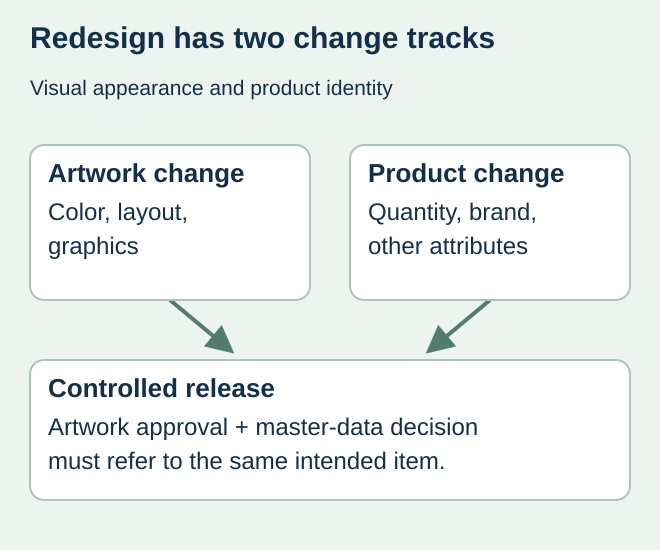
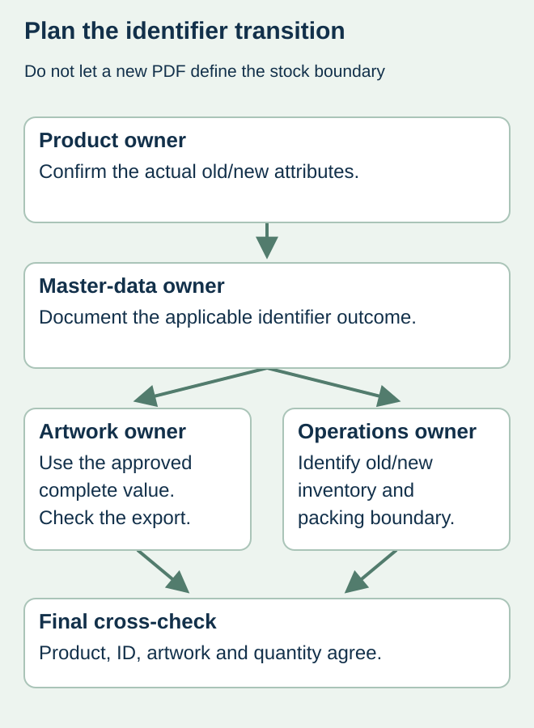

A label redesign reaches purchasing as a new PDF. Buried in the brief are a changed declared quantity and a revised brand name. Treating the job as a graphic refresh can leave the printer using an old identifier while sales and receiving partners expect a different item.
Ask the responsible brand and master-data owner to assess the actual product changes before the new barcode artwork is released. Record the identifier decision separately from the visual design approval. A printer cannot determine that decision from how different the two labels look.


Describe the change beyond the artwork
The GS1 GTIN Management Standard sets out rules for new products and changes to existing products, including defined situations concerning declared net content and primary brand. Apply the relevant current rule to the actual item with the responsible GS1 or master-data specialist. A color refresh alone and a changed product specification are not interchangeable descriptions.
Prepare a before-and-after brief that includes the product attributes, sales market and packaging hierarchy. Do not summarize every change as “new design.” If the business does not yet know whether a quantity, formulation or brand change is part of the launch, keep that uncertainty visible rather than authorizing a guessed identifier.
Make the decision traceable by item and level
| Transition field | What the owner supplies | Why purchasing needs it |
|---|---|---|
| Change definition | Old/new product attributes, not only PDF appearance | Establishes the question being assessed |
| Affected item | SKU and packaging level | Prevents a retail-item decision being copied to every level |
| Identifier outcome | Approved existing/new assignment and rationale reference | Tells artwork which exact value is authorized |
| Operational boundary | When and where old/new product is packed or received | Separates inventory and partner communication |
| Release state | Named decision owner and unresolved scope | Prevents provisional data becoming a print instruction |
The brand’s master-data team should determine the effect on other affected packaging levels and partner records. Purchasing records the resulting instructions; it should not create a new case identifier by changing a digit from the retail code. Keep partner-specific listing and receiving arrangements with the transition plan.


Separate the data decision from stock disposition
For a hypothetical beverage brand, the team may approve a new item identifier while older finished goods remain in distribution. That does not automatically mean every old label must be destroyed, or that the new label may be applied to the old product. The product owner and quality team need an explicit packing and disposition boundary for the actual inventories.
List existing label stock, unfinished packaging, finished goods and planned incoming labels separately. Each may require a different action. Preserve the connection between the product version and label version at the co-packer. Use the obsolete-stock guide for the physical runout decision; it does not replace the identifier assessment.
Release a linked set of records
Before ordering, compare the approved product reference, complete identifier, artwork revision and quantity schedule. Have the data owner confirm that the code in the actual export matches the outcome. Coordinate relevant catalog, ordering and receiving changes with the teams that own them. The label printer’s receipt of a PDF is not confirmation that those systems are ready.
If the decision is still open, separate exploratory artwork from production authority. Request a dated answer from the responsible owner and identify its schedule consequence. Reusing an old number simply to keep the press slot can move the unresolved problem into finished inventory.
Discuss the unresolved label requirement
Share the proposed product and artwork change list, affected SKU/pack levels, approved old/new identifier decision and intended packing transition. Mark unresolved decisions explicitly. Prepare a label specification inquiry. The contact page opens an email draft and lists email or WhatsApp for attachments. Supply, proof options, testing, pricing and timing require project confirmation.